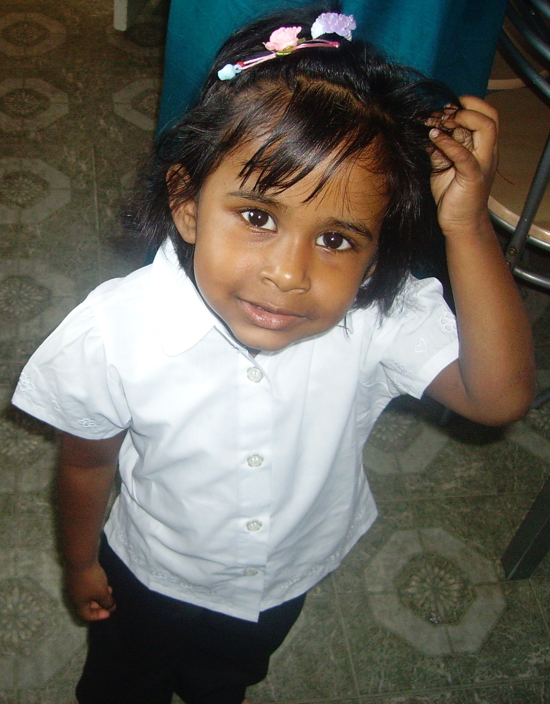
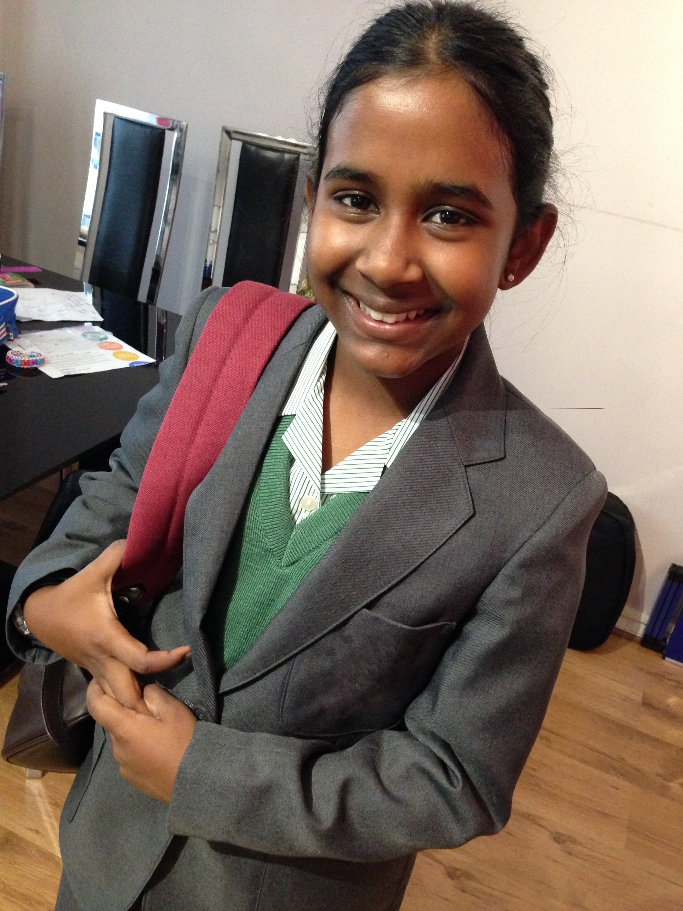

First Day of Primary School

First Day of Secondary School

Graduating from LSE

?
?
My personal journey through education and the question that sparked this research
I attended a state primary school, but for secondary education, my family really wanted me to attend the independent school near us. It was definitely not something we could afford, so my mum went to the school to enquire about bursaries. The receptionist told her it would be very unlikely for me to receive one.
But I ended up getting a 100% bursary—tuition fees, school uniform, lunch, everything covered.
None of my friends went to this school. I would often wish that I could have gone to the same secondary school as them, sharing those formative years together.
But would I have had the same outcomes? This is the question that sparked my interest in this research.
Would I not have made it to LSE to complete my undergraduate and master's degrees? Does private schooling really have that much of an impact? Or would I have found another path to the same destination?
This project explores these questions not just for me, but for the thousands of students across England navigating an education system marked by profound inequality.
I am currently completing my MSc in Inequalities and Social Science at the London School of Economics. I graduated with a BSc in International Social and Public Policy, also from the LSE.
Much of my research is inspired by personal, lived experiences. A particular passion of mine is tackling menstrual health stigma amongst Bangladeshi women—a topic I explored in depth in my undergraduate dissertation.
Group project exploring behavioural patterns and market dynamics in the cryptocurrency space using data science techniques.
View Project →Investigating extreme summer conditions across four world capitals, examining climate patterns and temperature trends.
View on GitHub →Analysis of political discourse and engagement patterns on Reddit, exploring how online communities discuss political topics.
View on GitHub →